Portfólio
Samla Amorim
Audiovisual e social media
Jornalista · Roteirista · Diretora · Editora de vídeo
Vídeos para redes sociais, lives e conteúdo digital
Candidatura · Analista de vídeos para redes sociais · AzMina
João Pessoa · PB
Quem sou eu
Sou uma mulher que faz tudo.
Escrevo, dirijo, edito. Cuido dos bichos, da casa, de quem precisa. Trabalho o dia inteiro e ainda carrego o que a sociedade espera de uma mulher, como se tudo isso fosse obrigação, e não esforço nem escolha.
Conheço esse cansaço por dentro, e é por isso que gosto de fazer vídeo para mulheres: rápido, claro, sem didatismo e com o cuidado de quem sabe do que está falando.
Meu lugar é onde comunicação, audiovisual e feminismo se encontram.
JORNALISTA · REGISTRO 0004257/PB · ARTISTA · REGISTRO 0002024/PB
02 · Samla Amorim — Portfólio
Áreas de atuação
O que eu faço
01
Edição de vídeo
Reels, TikTok, YouTube, TV, comerciais e cursos.
02
Social media
Planejamento, posts, carrosséis, stories e legendas.
03
Roteiro e direção
Roteiro, análise de roteiro, direção e assistência de direção.
04
Jornalismo e redação
Reportagem, matérias e produção de conteúdo.
05
Lives e automação
Lives no TikTok Studio e monitoramento de perfis com Python e IA.
06
Apresentação e atuação
Desenvoltura diante das câmeras e nos palcos.
07
Web design
Sites e landing pages, do briefing ao layout.
08
Atuação social
Projetos de mulheres, cultura e proteção animal.
03 · Samla Amorim — Portfólio
Experiência
Trajetória
Autônoma
Atual
Editora de vídeo e social media: edição para redes, YouTube, TV e cursos, conteúdo para Instagram e lives no TikTok
Agências Lamp, Lumos e Regal
2019 – hoje
Parceira: matérias e edição de vídeo (edição e animação na Lamp)
Escola Internacional Em Cena
2018 – hoje
Produção e assistência de direção
TV Master
2021
Roteirista e produtora do programa infantil C de Criança
Festival Aruanda de Cinema
2020
Voluntária na equipe de redação
Grão de Cinema
2018 – 2019
Estágio em produção e assistência de direção
Rádio Tabajara
2018 – 2019
Estágio no setor de redação
04 · Samla Amorim — Portfólio
Acadêmica e artística
Formação
Acadêmica
Jornalismo
Bacharelado · Uninassau · 2016–2019
Cinema e Produção Audiovisual
Especialização · Unicorp · 2020–2021
Letras – Português
UFPB · cursando
Artística e cursos
Interpretação para Cinema e TV
2016–2019
Teatro
Improvisação, trabalho em grupo e presença de cena
Apresentação para TV e Cinema
Dois cursos de 250 h · 2016–2017 e 2019–2020
Roteiro Cinematográfico
Curso de 12 h · 2020
05 · Samla Amorim — Portfólio
Audiovisual
Edição de vídeo
Edição e animação para diferentes plataformas, com clientes fixos e em parceria com agências (Lamp, Lumos e Regal). Cada projeto começa pelo estudo da personalidade da rede e do público que o cliente quer alcançar.
Último trabalho
Vídeos para a Brunel sobre o Programa Afirmativo de Aprendizagem para Mulheres Negras.
Redes sociais
YouTube
Animação
Comerciais
TV
Videoaulas
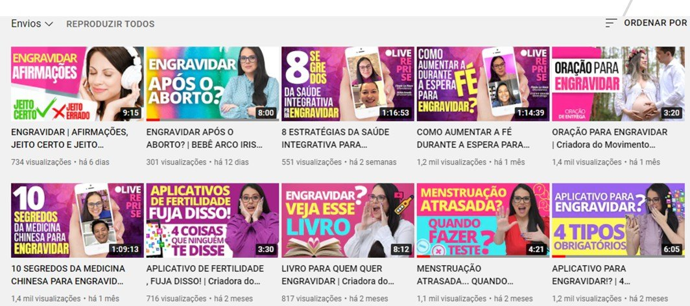
Vídeos editados para o canal Flavia La Noce no YouTube
06 · Samla Amorim — Portfólio
Edição de vídeo
Cursos e marketing digital
Edição de videoaulas e vídeos para cursos em plataformas como Hotmart e Netspeaks, e para projetos de marketing digital em geral.
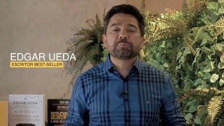
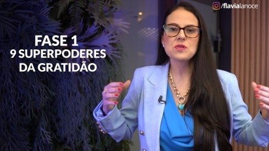
07 · Samla Amorim — Portfólio
Na TV · TV Master, João Pessoa
C de Criança
Projeto criado e vendido para a TV Master, em João Pessoa, no qual atuei como roteirista e produtora dos episódios. Foi 1 ano no ar, levando conteúdos educativos e criativos para o público infantil, na TV, no Instagram e no YouTube.
10,6 mil
seguidores no Instagram
2,7 mil
publicações no perfil
TV
YouTube
2021
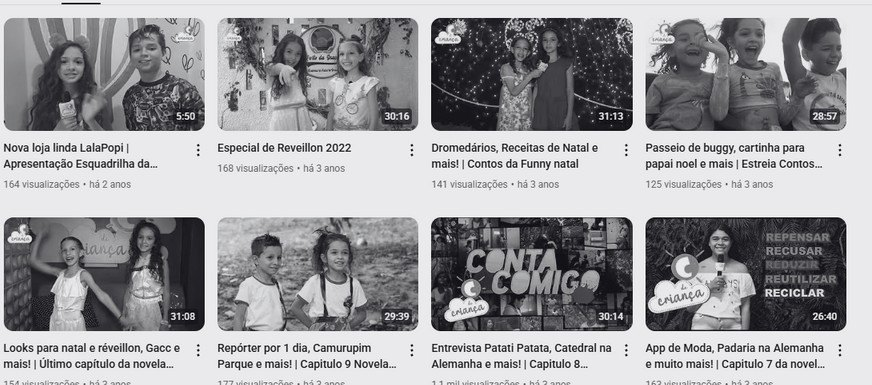
Canal do programa no YouTube · Instagram @programacdecrianca
08 · Samla Amorim — Portfólio
No cinema
Roteirista
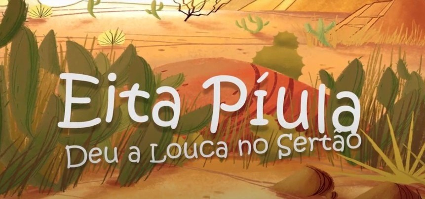
Eita Píula: Deu a Louca no Sertão
Roteiro · Longa-metragem · Disponível no YouTube
Websérie
Desaparecidos
Desaparecidos
Roteiro · Minissérie para a web · Disponível no YouTube
09 · Samla Amorim — Portfólio
Dados e redes
Lives, dados e IA
TikTok
Lives no TikTok Studio
Opero e monitoro lives no TikTok Studio em perfis de clientes. Também faço lives de jogos no meu perfil, de forma pessoal. Sou usuária intensa da plataforma e acompanho o que está em alta.
Python
Monitoramento de perfis
Crio automações em Python que analisam uma página: quem está publicando, quando e com que frequência.
Agentes de IA
IA no dia a dia
Crio e uso agentes de IA no trabalho, como a pesquisa de tendências do TikTok e do Instagram para orientar pautas e conteúdos.
Premiere
After Effects
CapCut
Canva
TikTok Studio
Python
GitHub
ClickUp
11 · Samla Amorim — Portfólio
Projetos para clientes
Web design e
redes sociais
Uno roteiro, imagem e estratégia para criar sites, landing pages e conteúdos que conversam com o público certo, do briefing à aprovação do cliente.
Briefing e planejamento
Sites e landing pages
Versão para celular
Identidade visual
Posts, carrosséis e stories
Legendas e aprovação
12 · Samla Amorim — Portfólio
Estudo de marca
Equilibre
Identidade visual e cartela de cores
Estudo de marca que guiou o site e as redes: logotipo em versão clara e escura, tipografia (Fraunces nos títulos, DM Sans nos textos) e cartela de cores com regra de uso: 60% fundos claros, 30% verde-petróleo e 10% destaque.
Logotipo
Tipografia
Cartela de cores
Mascotes
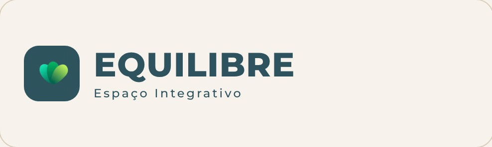
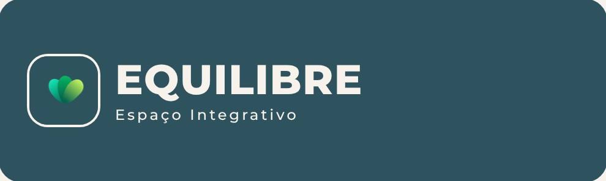
Cores da logo
Verde-petróleo
#2E535E
Verde-escuro
#13724E
Verde
#03AC5E
Verde-água
#10D7A6
Verde-limão
#A9E159
Neutros
Creme
#F7F3EC
Areia
#EADFCF
Rosa-claro
#F7DCD6
Grafite
#1F2D33
Destaques
Pêssego
#F2A68B
Rosa
#DF766C
Lavanda
#C9C2E8
Mostarda
#E8C26A
13 · Samla Amorim — Portfólio
Site e landing page
Equilibre
Espaço Integrativo · João Pessoa
Clínica de neuropsicologia, psicologia, psicopedagogia e nutrição. Fiz o planejamento do site (mapa, navegação e ordem da home), o protótipo da página inicial e uma landing page de agendamento pelo WhatsApp pensada para o celular.
Site
Landing page
Mapa do site
Mobile
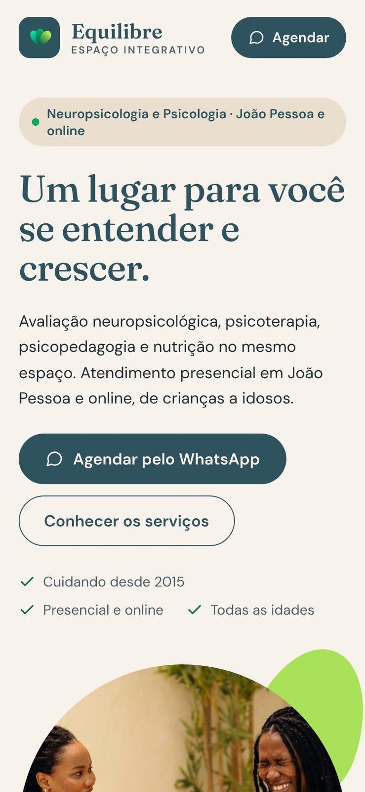
14 · Samla Amorim — Portfólio
Redes sociais
Equilibre
Instagram · @equilibreespacointegrativo
Carrosséis com os mascotes Equilibrinho e Emocionadinho, que explicam saúde emocional de um jeito leve, além de plano de 30 dias, legendas e aprovação com o cliente.
Carrosséis
Mascotes
Legendas
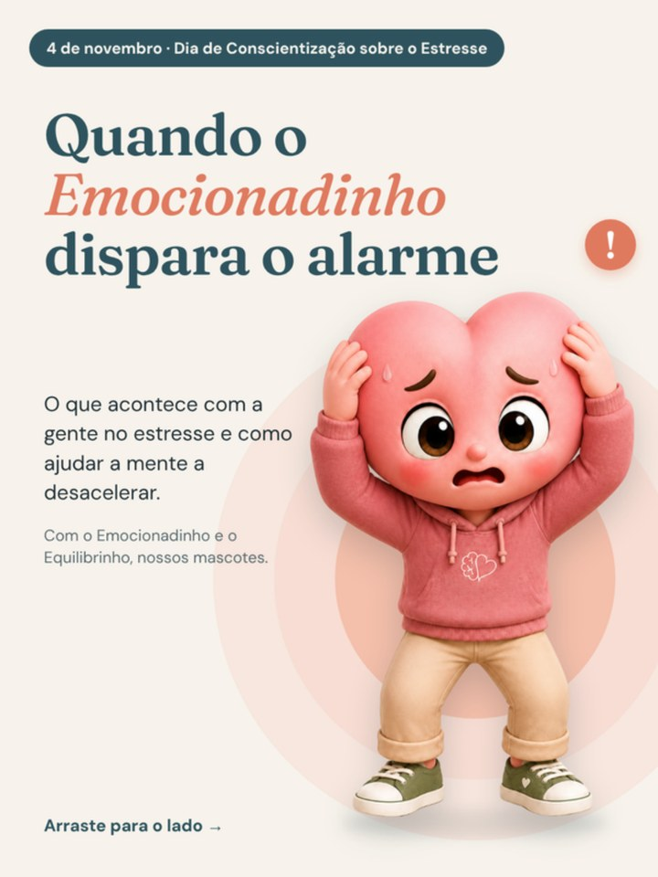
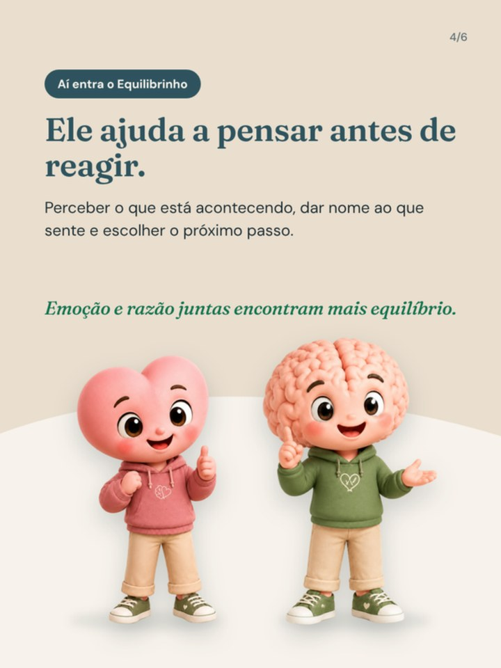
15 · Samla Amorim — Portfólio
Estudo de marca
Larissa
Chaves
Guia visual da marca
Guia para o site e as redes: versões do logo para cada fundo, fontes (Bricolage Grotesque, Figtree e Fahkwang) e cartela de cores com proporção de uso: 60% pêssego, 20% cacau, 10% pitaya, 7% folha e 3% caju.
Logotipo
Tipografia
Cartela de cores
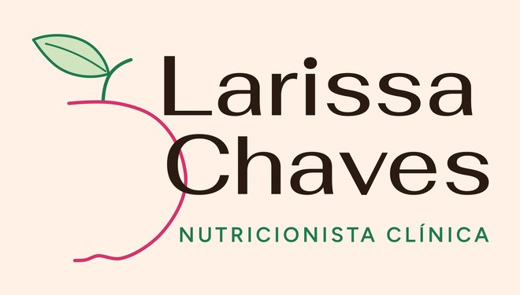
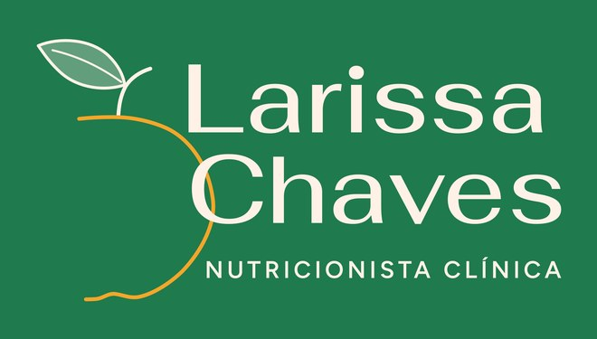
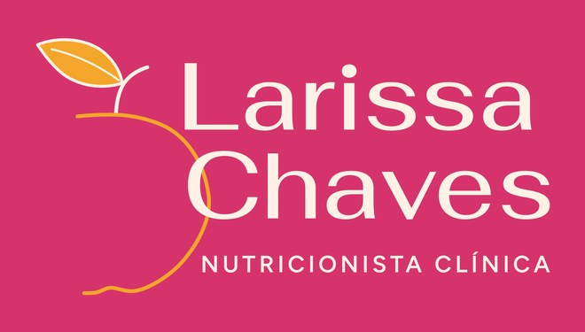
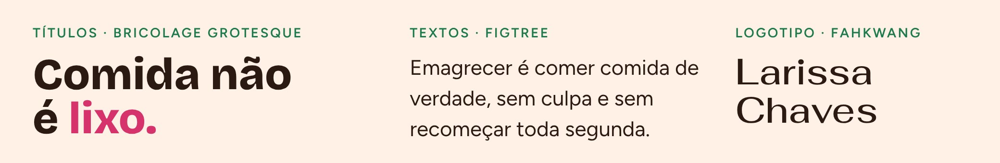
Base
Pêssego
#FFF1E6
Cacau
#2B1A12
Branco
#FFFFFF
Assinatura e apoio
Pitaya
#D6336C
Folha
#1F7A4D
Folha-clara
#CFE4BF
Caju
#F4A62A
16 · Samla Amorim — Portfólio
Landing page
Larissa
Chaves
Nutricionista clínica
Landing page de captação para consultas online e presenciais, com formulário de contato, explicação do acompanhamento e a identidade da marca, adaptada para o celular.
Landing page
Formulário
Mobile
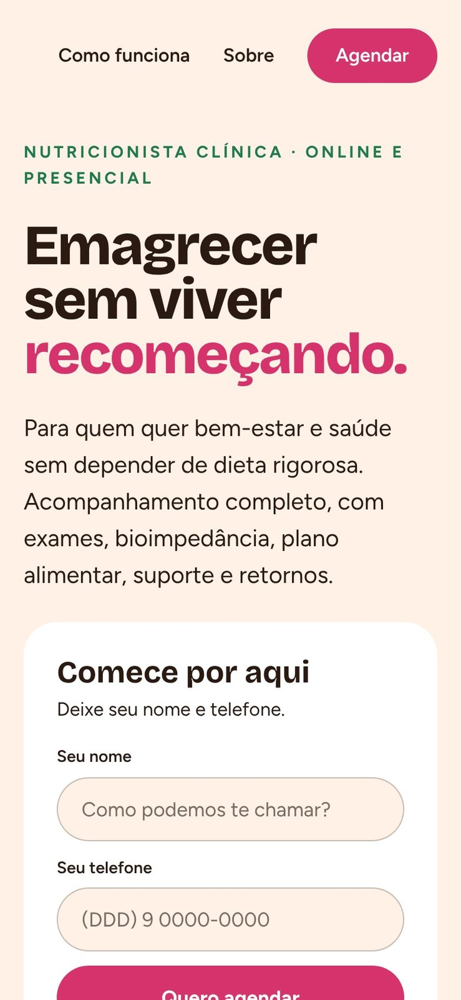
17 · Samla Amorim — Portfólio
Redes sociais
Larissa
Chaves
Instagram · @lariichavesnutri
Calendário semanal com posts, carrosséis e stories para datas como Halloween e Novembro Azul, com legendas no tom da nutricionista: leve e direto.
Calendário
Posts e carrosséis
Stories
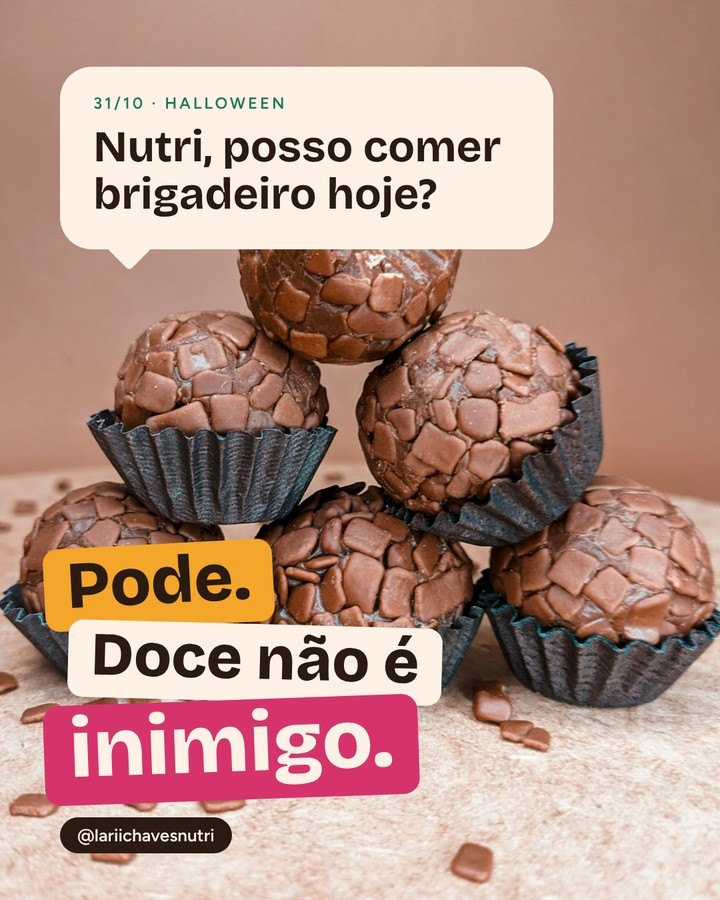
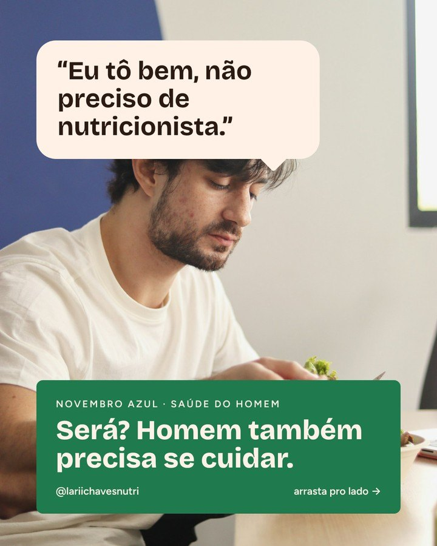
18 · Samla Amorim — Portfólio
Estudo de marca
Levana
Luna
Perfil de resenhas literárias
Identidade inspirada em locadora e sessão da meia-noite: paleta de nove cores com nomes próprios, tipografia de cartaz de cinema e proporção de uso de cada cor no feed e nos stories.
Paleta
Tipografia
Proporção de cores
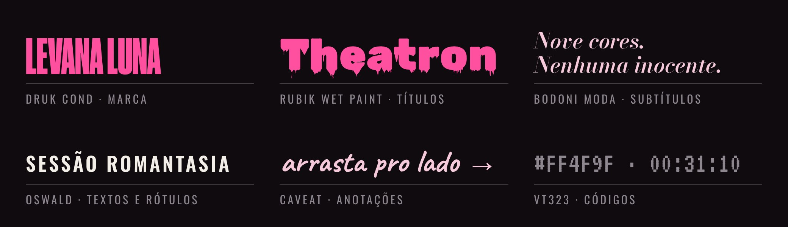
O jornal · O escuro
Retícula Cinza
#8E8790
Retícula Rosa
#F78FB8
Breu
#0F0B0E
Meia-Noite
#2A1124
Fumaça
#8E8790
O doce · O susto
Pipoca
#F3EEE8
Algodão-Doce
#F6C9DA
Chiclete
#FF4F9F
Cereja
#A3112E
19 · Samla Amorim — Portfólio
Redes sociais · Posts
Levana
Luna
Carrossel de resenha
Carrossel de seis slides para a resenha de Palco Para Vilões: pergunta de abertura, gancho, apresentação do universo do livro e chamada final.
Feed
Carrossel
Resenha
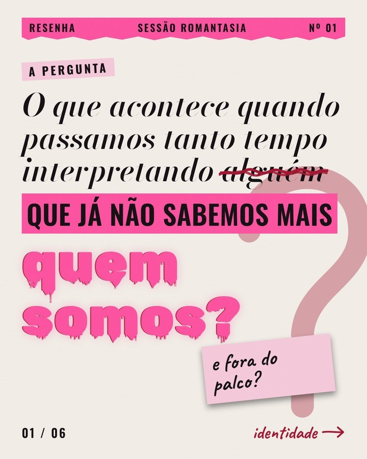
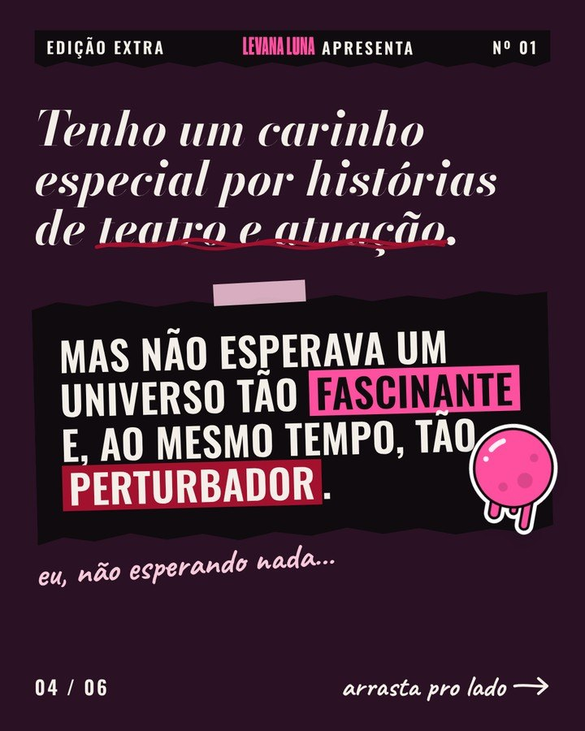
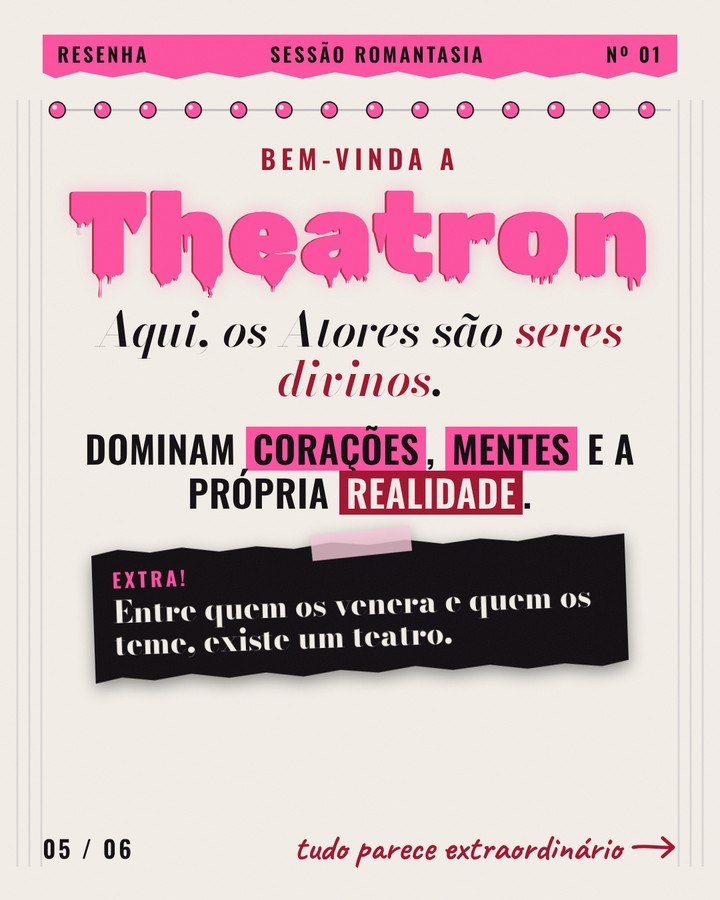
20 · Samla Amorim — Portfólio
Redes sociais · Stories
Levana
Luna
Stories interativos
Sequência de stories para aproximar as leitoras: próximas resenhas, caixinha de perguntas e bingo literário para responder e compartilhar.
Stories
Caixinha
Interação
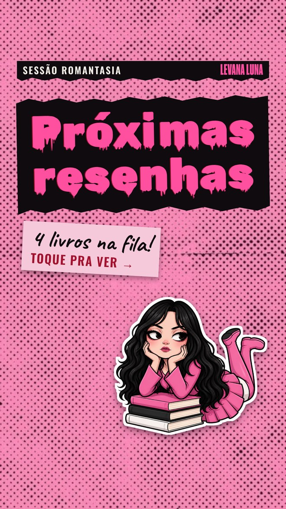
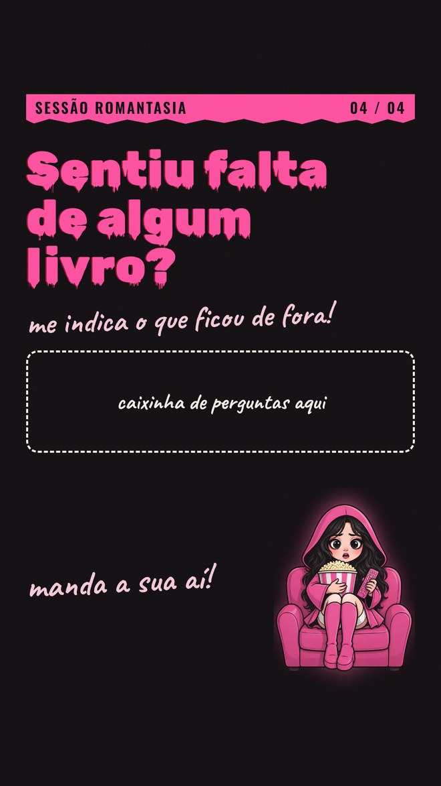
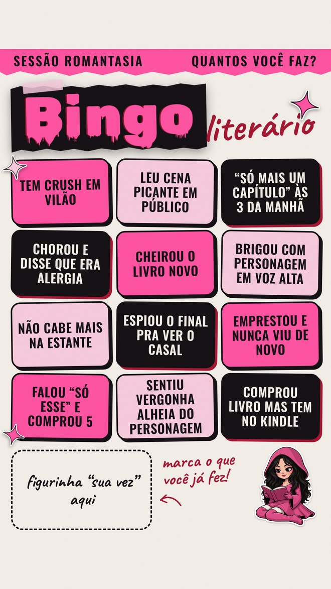
21 · Samla Amorim — Portfólio
Mulheres, cultura e voluntariado
Onde também estou
Fui integrante
Projeto LIS
Coletivo de mulheres diretoras e da área de comunicação. O LIS realiza palestras sobre temas feministas e de audiovisual (inclusive em escolas, para conscientizar meninos sobre masculinidade tóxica), mostras com diretoras mulheres, mesas abertas e podcasts.
Faço parte
Mulheres Leem Mulheres
Clube do livro dentro da UFPB, com público misto, que lê autoras mulheres e nordestinas.
Voluntária
Festival Aruanda de Cinema
Equipe de redação do festival de cinema, com matérias publicadas no site, como a cobertura da Live de Cinema com Caco Ciocler, em 2020.
22 · Samla Amorim — Portfólio
Além do trabalho
Proteção animal
Carrego um compromisso pessoal com a proteção animal independente. Participo de resgates, lares temporários e campanhas de adoção responsável, unindo comunicação e ação para dar visibilidade à causa.
Esse trabalho voluntário me ensinou sobre empatia, responsabilidade e a força das pequenas atitudes para transformar vidas, humanas e animais.
Ser comunicadora também é usar minha voz para causas que importam.
23 · Samla Amorim — Portfólio
Contato
Vamos
conversar?
samlaamorim@hotmail.com
Cidade
João Pessoa · PB
Currículo
REGISTRO DE JORNALISTA 0004257/PB · REGISTRO DE ARTISTA 0002024/PB
Redes sociais
Social media
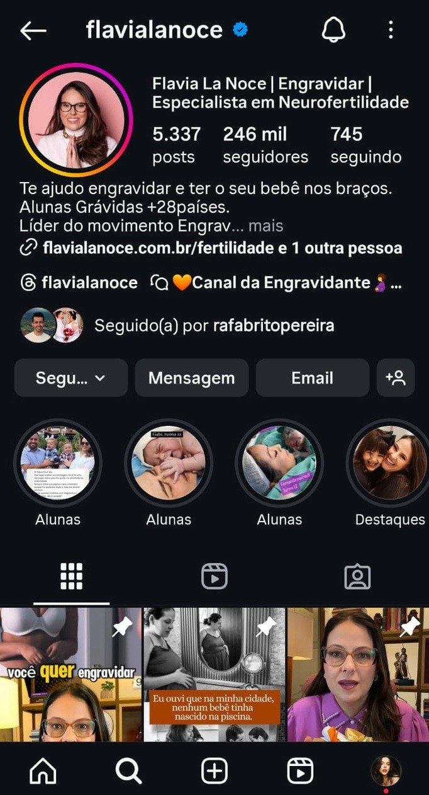
Flavia La Noce
Social media · Edição de vídeo
Coach de saúde feminina e fertilidade, com mais de 246 mil seguidores. Planejei e produzi conteúdos para aumentar o engajamento e editei os vídeos do YouTube, do Instagram e dos cursos.
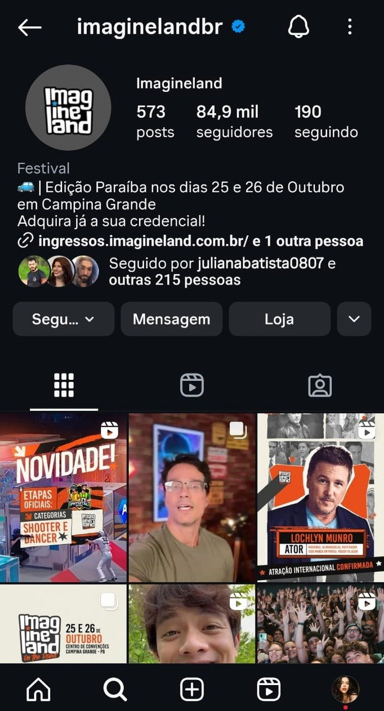
Imagineland
Social media
Festival de cultura pop na Paraíba. Criei conteúdos para as redes com dinamismo e linguagem jovem para atrair e engajar o público durante o evento.
10 · Samla Amorim — Portfólio